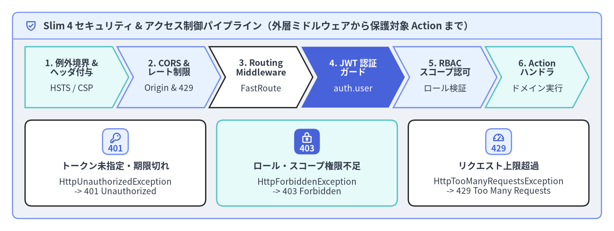
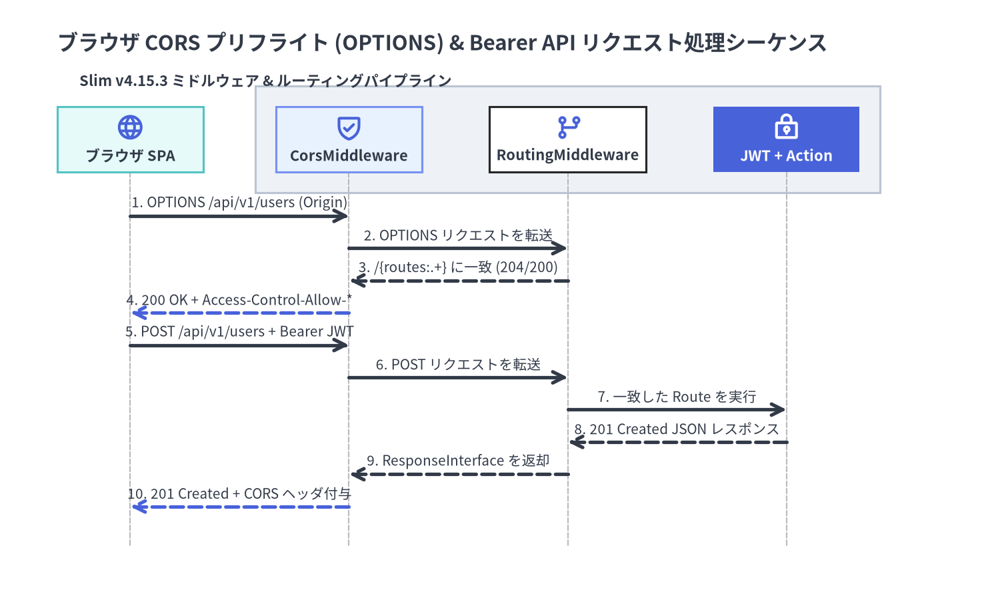

JWT 認証・RBAC 認可・CORS 設計
Slim（v4.15.3）は PSR-7 のイミュータブルな HTTP メッセージと PSR-15 の MiddlewareInterface パイプラインを中核に据えて設計されているため、フレームワーク内部に巨大なセッション管理や独自の認証機構を密結合で抱え込んでいません。その代わりに、JWT / Bearer トークン認証、ロールベースアクセス制御（RBAC）、CORS（オリジン間リソース共有）、レート制限をそれぞれ独立した PSR-15 ミドルウェアとして組み合わせ、ServerRequestInterface の属性（Attribute）による認証情報の受け渡しや、HttpSpecializedException サブクラスの送出による即時中断をクリーンに実装できます。

Source Code
from drawlib.canvas import save, setup
from drawlib.icons import phosphor
from drawlib.shapes import rectangle
from drawlib.smartarts import CardList, ChevronProcess, Panel
from drawlib.styles import Styles
from drawlib.text import text
setup(width=196, height=74, dpi=150)
outer = Panel(
"Slim 4 セキュリティ & アクセス制御パイプライン（外層ミドルウェアから保護対象 Action まで）",
style=Styles.Neutral.patch(shape_r=2.0),
header_style=Styles.PrimaryNeutral.patch(shape_line_width=1.2),
text_style=Styles.DarkBold.patch(text_size=11.5),
icon=phosphor.shield_check,
icon_style=Styles.PrimaryBold,
header_variant="filled",
header_height=8.5,
)
outer.draw((4.0, 4.0), width=188.0, height=66.0)
proc = ChevronProcess(
style=Styles.White,
text_style=Styles.DarkBold.patch(text_size=10.2),
description_style=Styles.Dark.patch(text_size=10.0),
corner_angle=62.0,
spacing=1.5,
flat_left_end=True,
)
proc.add(
"1. 例外境界 &\nヘッダ付与",
description="HSTS / CSP",
style=Styles.SecondaryNeutral,
)
proc.add(
"2. CORS &\nレート制限",
description="Origin & 429",
style=Styles.PrimaryNeutral,
)
proc.add(
"3. Routing\nMiddleware",
description="FastRoute",
style=Styles.White,
)
proc.add(
"4. JWT 認証\nガード",
description="auth.user",
style=Styles.PrimaryFlat,
text_style=Styles.WhiteBold.patch(text_size=10.2),
description_style=Styles.White.patch(text_size=10.0),
)
proc.add(
"5. RBAC\nスコープ認可",
description="ロール検証",
style=Styles.PrimaryNeutral,
)
proc.add(
"6. Action\nハンドラ",
description="ドメイン実行",
style=Styles.SecondaryNeutral,
)
proc.draw(xy=(8.0, 39.5), width=180.0, height=19.5)
cards = CardList(
style=Styles.White,
text_style=Styles.DarkBold.patch(text_size=10.5),
description_style=Styles.Dark.patch(text_size=10.0),
badge_shape="rounded_rect",
badge_style=Styles.PrimaryNeutral,
badge_text_style=Styles.PrimaryBold.patch(text_size=10.0),
icon_style=Styles.PrimaryBold,
direction="horizontal",
spacing=3.5,
)
cards.add(
"トークン未指定・期限切れ",
"HttpUnauthorizedException\n-> 401 Unauthorized",
badge_text="401",
icon=phosphor.key,
)
cards.add(
"ロール・スコープ権限不足",
"HttpForbiddenException\n-> 403 Forbidden",
badge_text="403",
icon=phosphor.lock_key,
style=Styles.SecondaryNeutral,
badge_style=Styles.PrimaryFlat,
badge_text_style=Styles.WhiteBold.patch(text_size=10.0),
icon_style=Styles.WhiteBold,
)
cards.add(
"リクエスト上限超過",
"HttpTooManyRequestsException\n-> 429 Too Many Requests",
badge_text="429",
icon=phosphor.gauge,
)
cards.draw(xy=(8.0, 8.0), width=180.0, height=27.5)
save()
Slim 4 における多層防御セキュリティ設計
本番環境の Slim 4 API では、責務ごとにセキュリティ処理を分離し、PSR-15 同心円 LIFO ミドルウェアパイプラインの適切な階層へ配置します。例外捕捉・セキュリティヘッダ・CORS・レート制限といった横断的関心事はアプリケーション最外層に配置し、JWT 認証と RBAC 認可は保護対象の RouteGroup または個別 Route にスコープを絞って適用します。
| セキュリティ階層 | 適用スコープと登録箇所 | リクエスト / レスポンスへの変更 | 検証失敗時の挙動 |
|---|---|---|---|
| 例外境界 & セキュリティヘッダ | アプリ全体（$app->add(...) 最外層） |
Strict-Transport-Security, X-Content-Type-Options, Content-Security-Policy を付与 |
すべての Throwable を捕捉し安全なレスポンスを生成 |
| CORS プリフライト & ヘッダ | アプリ全体（$app->add(CorsMiddleware::class)） |
通常応答および OPTIONS 応答に Access-Control-Allow-* ヘッダを付与 |
許可されていない Origin には CORS ヘッダを付与しない |
| レート制限ガード | アプリ全体または API RouteGroup |
IP / API キー単位でトークンバケットを消費し X-RateLimit-* ヘッダを付与 |
HttpTooManyRequestsException（429）を送出 |
| JWT / Bearer 認証 | 保護対象 RouteGroup（/api/v1） |
JWT 署名・有効期限を検証し $request->withAttribute('auth.user', $claims) を付与 |
HttpUnauthorizedException（401）を送出 |
| RBAC / スコープ認可 | 管理者 RouteGroup または個別 Route |
$request->getAttribute('auth.user') からロールとスコープ権限を検証 |
HttpForbiddenException（403）を送出 |
ステートレスな Bearer / JWT 認証ミドルウェア
ステートレスな JWT 認証ミドルウェアは Psr\Http\Server\MiddlewareInterface を実装します。Authorization ヘッダから Bearer <token> を抽出し、暗号署名および標準クレーム（exp, iss, aud, sub）を検証したうえで、検証済みプリンシパルを $request->withAttribute('auth.user', $principal) として後続ハンドラへ渡します。トークンが欠落・不正・期限切れの場合は Slim\Exception\HttpUnauthorizedException をスローし、後続処理を即座に中断して ErrorMiddleware へエラー出力を委譲します。
<?php
declare(strict_types=1);
namespace App\Http\Middleware;
use App\Security\AuthenticatedUser;
use App\Security\JwtTokenVerifierInterface;
use Psr\Http\Message\ResponseInterface;
use Psr\Http\Message\ServerRequestInterface;
use Psr\Http\Server\MiddlewareInterface;
use Psr\Http\Server\RequestHandlerInterface;
use Slim\Exception\HttpUnauthorizedException;
use Throwable;
final class JwtAuthenticationMiddleware implements MiddlewareInterface
{
public const AUTH_USER_ATTRIBUTE = 'auth.user';
public function __construct(
private readonly JwtTokenVerifierInterface $tokenVerifier,
) {
}
public function process(
ServerRequestInterface $request,
RequestHandlerInterface $handler
): ResponseInterface {
// CORS プリフライトリクエスト（OPTIONS）は Bearer トークン検証をスキップして通過させる
if (strtoupper($request->getMethod()) === 'OPTIONS') {
return $handler->handle($request);
}
$authHeader = $request->getHeaderLine('Authorization');
if (!preg_match('/^Bearer\s+(?<token>[A-Za-z0-9\-_]+\.[A-Za-z0-9\-_]+\.[A-Za-z0-9\-_]+)$/', $authHeader, $matches)) {
$exception = new HttpUnauthorizedException(
$request,
'Missing or malformed Authorization: Bearer <token> header.'
);
$exception->setDescription('Provide a valid Bearer JWT in the Authorization header.');
throw $exception;
}
try {
$claims = $this->tokenVerifier->verify($matches['token']);
} catch (Throwable $e) {
throw new HttpUnauthorizedException(
$request,
'Invalid or expired JWT access token.',
$e
);
}
$principal = new AuthenticatedUser(
userId: (string) $claims['sub'],
roles: (array) ($claims['roles'] ?? []),
scopes: explode(' ', (string) ($claims['scope'] ?? '')),
);
// イミュータブルな PSR-7 リクエスト属性として認証済みプリンシパルを後続のガード・Action へ伝播
return $handler->handle(
$request->withAttribute(self::AUTH_USER_ATTRIBUTE, $principal)
);
}
}
ServerRequestInterface::withAttribute() はイミュータブルな新しいリクエストインスタンスを返すため、後続の Action コントローラや RBAC ミドルウェアはグローバル変数や静的プロパティに依存することなく、$request->getAttribute(JwtAuthenticationMiddleware::AUTH_USER_ATTRIBUTE) から型安全に認証済みユーザーを参照できます。
ロールベース認可（RBAC）とスコープガード
認証（Authentication: 401 Unauthorized）が「呼び出し元が誰であるか」を特定するのに対し、認可（Authorization: 403 Forbidden）は「その認証済みプリンシパルが対象操作を実行する権限を持つか」を判定します。RBAC 判定をパラメータ化されたミドルウェアとして切り出すことで、任意の RouteGroup や個別 Route に対して柔軟に権限ガードを付与できます。
<?php
declare(strict_types=1);
namespace App\Http\Middleware;
use App\Security\AuthenticatedUser;
use Psr\Http\Message\ResponseInterface;
use Psr\Http\Message\ServerRequestInterface;
use Psr\Http\Server\MiddlewareInterface;
use Psr\Http\Server\RequestHandlerInterface;
use Slim\Exception\HttpForbiddenException;
use Slim\Exception\HttpUnauthorizedException;
use Slim\Routing\RouteCollectorProxy;
final class RequireRoleMiddleware implements MiddlewareInterface
{
/**
* @param list<string> $allowedRoles
*/
public function __construct(
private readonly array $allowedRoles,
private readonly ?string $requiredScope = null,
) {
}
public function process(
ServerRequestInterface $request,
RequestHandlerInterface $handler
): ResponseInterface {
$user = $request->getAttribute(JwtAuthenticationMiddleware::AUTH_USER_ATTRIBUTE);
if (!$user instanceof AuthenticatedUser) {
throw new HttpUnauthorizedException($request, 'Authentication required before role evaluation.');
}
$hasRole = count(array_intersect($this->allowedRoles, $user->roles)) > 0;
$hasScope = $this->requiredScope === null || in_array($this->requiredScope, $user->scopes, true);
if (!$hasRole || !$hasScope) {
$exception = new HttpForbiddenException(
$request,
sprintf('Requires one of roles [%s].', implode(', ', $this->allowedRoles))
);
$exception->setDescription('Your account does not have sufficient privileges for this resource.');
throw $exception;
}
return $handler->handle($request);
}
}
// /api/v1 グループ全体に JWT 認証を適用し、配下の管理者ルートに RBAC ガードを重ねる構成例：
$app->group('/api/v1', function (RouteCollectorProxy $v1): void {
$v1->get('/profile', \App\Action\Profile\GetProfileAction::class);
$v1->group('/admin', function (RouteCollectorProxy $admin): void {
$admin->post('/users', \App\Action\Admin\CreateUserAction::class)
->add(new RequireRoleMiddleware(['admin'], requiredScope: 'users:write'));
$admin->get('/audit-logs', \App\Action\Admin\ListAuditLogsAction::class)
->add(new RequireRoleMiddleware(['admin', 'auditor'], requiredScope: 'audit:read'));
});
})->add(JwtAuthenticationMiddleware::class);
JwtAuthenticationMiddleware と RequireRoleMiddleware を組み合わせる際は、以下の 2 つの重要なルールを押さえておきましょう。
- ルートグループと個別ルートの実行順序: Slim の
Route::prepareRouteMiddleware()は、グループミドルウェアを個別ルートミドルウェアの外側にラップします。そのため、/api/v1グループにJwtAuthenticationMiddlewareを追加し、個別ルートにRequireRoleMiddlewareを追加すると、必ずJwtAuthenticationMiddlewareが先に実行されてauth.user属性がセットされた状態でRequireRoleMiddlewareが呼び出されます。 HttpExceptionへの最新$requestの引き渡し:new HttpUnauthorizedException($request)やnew HttpForbiddenException($request)を生成する際は、属性が付与された最新の$requestインスタンスを第 1 引数に渡すことで、ErrorMiddleware側でもコンテキスト情報を保持できます。
CORS（オリジン間リソース共有）とプリフライト応答
ブラウザ上の SPA（Single-Page Application）から Authorization ヘッダや Content-Type: application/json を伴うクロスオリジンリクエストが送信される際、ブラウザは事前に OPTIONS メソッドによるプリフライトリクエスト（Preflight Request）を発行します。Slim 4 で CORS を正しく機能させるには、以下の 3 要素を連携させます。
- キャッチオール
OPTIONSルートの登録（$app->options('/{routes:.+}', ...)）：FastRoute がOPTIONSリクエストに対してHttpMethodNotAllowedException（405）を送出するのを防ぎます。 CorsMiddlewareの配置：通常のレスポンスおよびプリフライト応答にAccess-Control-Allow-*ヘッダを付与します。ErrorHandler::determineStatusCode()の組み込み仕様：Slim のデフォルトErrorHandlerはif ($this->method === 'OPTIONS') { return 200; }という判定を備えており、万一OPTIONSリクエスト中に例外が発生した場合でもステータスコード200を返します。

Source Code
from drawlib.canvas import save, setup
from drawlib.diagrams.sequence import Participant, ParticipantGroup, PhosphorIcon, SequenceDiagram
from drawlib.styles import Styles
setup(width=192, height=116, dpi=150)
seq = SequenceDiagram(
node_style=Styles.PrimaryBold,
node_text_style=Styles.DarkBold.patch(text_size=10.5),
edge_style=Styles.DarkBold,
edge_text_style=Styles.Dark.patch(text_size=10.0),
node_card_style=Styles.Neutral,
title="ブラウザ CORS プリフライト (OPTIONS) & Bearer API リクエスト処理シーケンス",
autonumber=True,
col_width=42.0,
step_y=6.2,
)
browser = seq.add(
Participant(
"ブラウザ SPA",
width=28.0,
height=12.5,
icon=PhosphorIcon.GLOBE,
icon_size=5.5,
card_style=Styles.SecondaryNeutral,
)
)
slim_group = seq.add(
ParticipantGroup(
title="Slim v4.15.3 ミドルウェア & ルーティングパイプライン",
padding=4.0,
style=Styles.Neutral,
text_style=Styles.DarkBold.patch(text_size=10.5),
)
)
cors_mw = slim_group.add(
Participant(
"CorsMiddleware",
width=28.0,
height=12.5,
icon=PhosphorIcon.SHIELD_CHECK,
icon_size=5.5,
card_style=Styles.PrimaryNeutral,
)
)
routing_mw = slim_group.add(
Participant(
"RoutingMiddleware",
width=30.0,
height=12.5,
icon=PhosphorIcon.GIT_BRANCH,
icon_size=5.5,
card_style=Styles.White,
)
)
jwt_action = slim_group.add(
Participant(
"JWT + Action",
width=28.0,
height=12.5,
icon=PhosphorIcon.LOCK_KEY,
icon_size=5.5,
card_style=Styles.PrimaryFlat,
text_style=Styles.WhiteBold.patch(text_size=10.5),
style=Styles.WhiteBold,
)
)
browser.request(cors_mw, "OPTIONS /api/v1/users (Origin)")
cors_mw.request(routing_mw, "OPTIONS リクエストを転送")
routing_mw.reply(cors_mw, "/{routes:.+} に一致 (204/200)")
cors_mw.reply(browser, "200 OK + Access-Control-Allow-*", style=Styles.PrimaryBold)
browser.request(cors_mw, "POST /api/v1/users + Bearer JWT")
cors_mw.request(routing_mw, "POST リクエストを転送")
routing_mw.request(jwt_action, "一致した Route を実行")
jwt_action.reply(routing_mw, "201 Created JSON レスポンス")
routing_mw.reply(cors_mw, "ResponseInterface を返却")
cors_mw.reply(browser, "201 Created + CORS ヘッダ付与", style=Styles.PrimaryBold)
seq.draw(xy=(6.0, 4.0))
save()
許可オリジンのホワイトリスト検証を備えた本番用 CorsMiddleware と、キャッチオール OPTIONS ルートの実装例は以下の通りです。
<?php
declare(strict_types=1);
namespace App\Http\Middleware;
use Psr\Http\Message\ResponseInterface;
use Psr\Http\Message\ServerRequestInterface;
use Psr\Http\Server\MiddlewareInterface;
use Psr\Http\Server\RequestHandlerInterface;
use Slim\Routing\RouteContext;
final class CorsMiddleware implements MiddlewareInterface
{
/**
* @param list<string> $allowedOrigins
*/
public function __construct(
private readonly array $allowedOrigins = ['https://app.example.com'],
) {
}
public function process(
ServerRequestInterface $request,
RequestHandlerInterface $handler
): ResponseInterface {
$routeContext = RouteContext::fromRequest($request);
$routingResults = $routeContext->getRoutingResults();
$methods = $routingResults->getAllowedMethods();
$requestHeaders = $request->getHeaderLine('Access-Control-Request-Headers');
$response = $handler->handle($request);
$origin = $request->getHeaderLine('Origin');
if ($origin !== '' && in_array($origin, $this->allowedOrigins, true)) {
$response = $response
->withHeader('Access-Control-Allow-Origin', $origin)
->withHeader('Access-Control-Allow-Credentials', 'true')
->withHeader('Vary', 'Origin');
}
$allowedMethods = count($methods) > 0
? implode(', ', array_unique(array_merge($methods, ['OPTIONS'])))
: 'GET, POST, PUT, PATCH, DELETE, OPTIONS';
return $response
->withHeader('Access-Control-Allow-Methods', $allowedMethods)
->withHeader(
'Access-Control-Allow-Headers',
$requestHeaders !== '' ? $requestHeaders : 'Content-Type, Authorization, X-Requested-With'
)
->withHeader('Access-Control-Max-Age', '86400');
}
}
// bootstrap/routes.php — プリフライトリクエスト用のキャッチオール OPTIONS ルート：
$app->options('/{routes:.+}', function (
ServerRequestInterface $request,
ResponseInterface $response
): ResponseInterface {
return $response;
});
// bootstrap/middleware.php — RoutingMiddleware を CorsMiddleware の外側に配置して getAllowedMethods() を取得可能にする
$app->add(CorsMiddleware::class);
$app->addRoutingMiddleware();
$app->addErrorMiddleware(displayErrorDetails: false, logErrors: true, logErrorDetails: true);
レート制限（429）と HTTP セキュリティヘッダの強化
クレデンシャルスタッフィング攻撃やトークン総当たり攻撃、MIME スニッフィング・クリックジャッキングを防ぐため、Redis や APCu を用いたレート制限（上限超過時に Slim\Exception\HttpTooManyRequestsException を送出）と標準セキュリティヘッダ付与をミドルウェアで統合します。
| ヘッダ名 | 本番環境での推奨値 | 防御対象・効果 |
|---|---|---|
Strict-Transport-Security |
max-age=63072000; includeSubDomains; preload |
HTTPS 通信のみを強制（HSTS） |
X-Content-Type-Options |
nosniff |
JSON レスポンスを HTML として解釈する MIME スニッフィングを防止 |
X-Frame-Options |
DENY |
<frame> / <iframe> 埋め込みによるクリックジャッキングを防止 |
Content-Security-Policy |
default-src 'none'; frame-ancestors 'none' |
JSON API レスポンスにおけるスクリプト実行やフレーム埋め込みを禁止 |
Referrer-Policy |
no-referrer |
Referer ヘッダを通じた URL パラメータやトークン漏洩を防止 |
<?php
declare(strict_types=1);
namespace App\Http\Middleware;
use App\Security\RateLimiterInterface;
use Psr\Http\Message\ResponseInterface;
use Psr\Http\Message\ServerRequestInterface;
use Psr\Http\Server\MiddlewareInterface;
use Psr\Http\Server\RequestHandlerInterface;
use Slim\Exception\HttpTooManyRequestsException;
final class RateLimitAndSecurityHeadersMiddleware implements MiddlewareInterface
{
public function __construct(
private readonly RateLimiterInterface $rateLimiter,
) {
}
public function process(
ServerRequestInterface $request,
RequestHandlerInterface $handler
): ResponseInterface {
$clientKey = $request->getServerParams()['REMOTE_ADDR'] ?? 'unknown';
$quota = $this->rateLimiter->consume($clientKey, limit: 120, windowSeconds: 60);
if (!$quota->isAllowed) {
$exception = new HttpTooManyRequestsException(
$request,
sprintf('Rate limit exceeded. Retry after %d seconds.', $quota->retryAfterSeconds)
);
throw $exception;
}
$response = $handler->handle($request);
return $response
->withHeader('X-RateLimit-Limit', (string) $quota->limit)
->withHeader('X-RateLimit-Remaining', (string) $quota->remaining)
->withHeader('Strict-Transport-Security', 'max-age=63072000; includeSubDomains; preload')
->withHeader('X-Content-Type-Options', 'nosniff')
->withHeader('X-Frame-Options', 'DENY')
->withHeader('Content-Security-Policy', "default-src 'none'; frame-ancestors 'none'")
->withHeader('Referrer-Policy', 'no-referrer');
}
}
続いて ErrorMiddleware とカスタム ErrorRenderer に進み、HttpUnauthorizedException（401）・HttpForbiddenException（403）・HttpTooManyRequestsException（429）を構造化 JSON や RFC 9457 Problem Details 形式で出力する方法を確認しましょう。また、認証・認可ミドルウェアの自動テスト手法については PHPUnit によるインメモリ HTTP テスト および Slim 4 API Reference もあわせて参照してください。